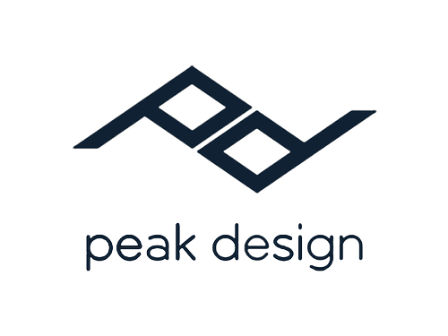
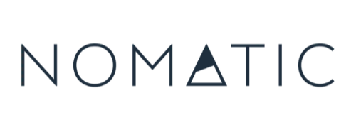
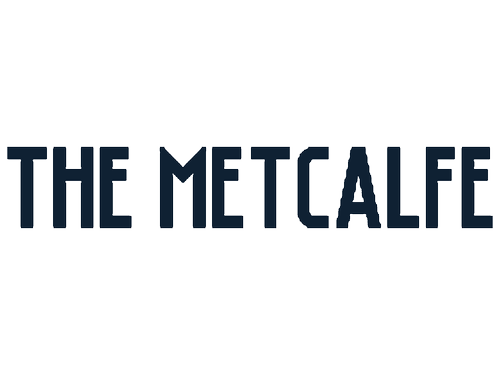
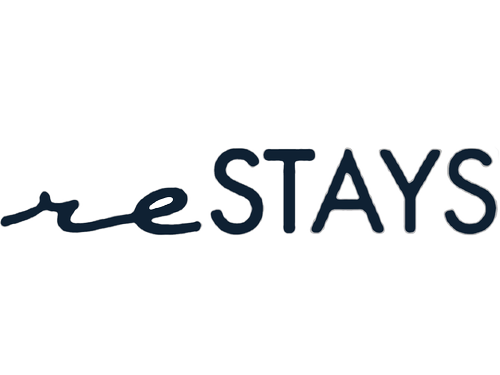
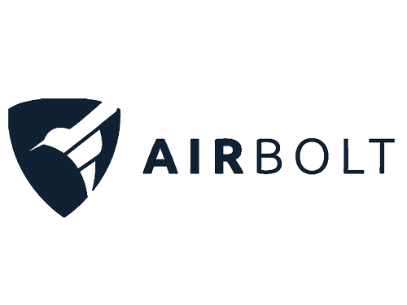
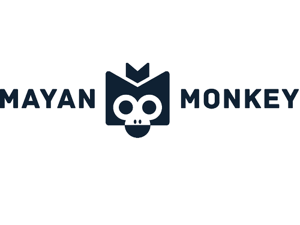
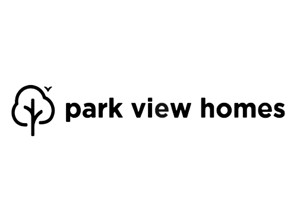
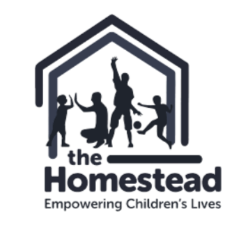

Non-profit · Mission film
Trusted by 30+ brands and causes, filmed in 25+ countries


















THE IMPACT TRANSLATION GAP
Data tells you what happened. Human stories tell you why.
Across the social sector, a quiet disconnect holds back real progress. Funders, boards and stakeholders operate in KPIs, quarterly reports and strategic plans, while grassroots community organizations operate in lived human realities. When those two worlds don’t speak the same language, trust erodes, priorities drift, and vital community work goes unseen.
Social Films exists to translate between both worlds, turning lived community experience into shared strategic clarity.
HOW WE WORK
One mission. Two ways we create impact.
Our studio and our Initiative run separately. Commissioned projects are built around your goals, and 10% of Social Films’ profits from them help fund community-level storytelling through the Initiative.
Our studio · For funders, NGOs & purpose-driven brands
Strategic storytelling & impact intelligence
We partner with foundations, associations and ethical brands to produce public-facing mission films alongside internal qualitative tools, like video surveys and human-centric impact reports, that align leadership with the communities they serve. Through Social Data, we turn that human-centric content into clear data reports.
View services →Our Initiative · For grassroots community organizations
The Social Films Initiative
Through our dedicated social impact program, we sponsor cinema-grade documentary production for frontline community initiatives, giving local leaders the visual assets they need to secure funding, build trust and scale their voice.
Learn about the Initiative →SOCIAL ENTERPRISE IMPACT SNAPSHOT
Built for measurable, self-sustaining impact.
Exchange over extraction
100% community-approved storytelling rooted in dignity, consent and local agency.
Cross-subsidized model
Every paid project, from foundations to brands, funds pro-bono production hours for grassroots partners.
Board-to-ground alignment
Transforming qualitative community testimony into actionable visual insights for decision-makers.
FEATURED WORK
Stories that move stakeholders and communities.
Hospitality brand × non-profit
Relais & Châteaux
Association · Docu-series
Choices for Youth
Hospitality brand · Destination film